☎ 0216 344 48 19
Soğutucu Akışkanlar (Gaz) kategorisinde Klimasun kataloğunda 100 ürün bulunuyor. Hongsen, Toshiba, Daikin, Lg başta olmak üzere önde gelen markaların endüstriyel iklimlendirme ürünlerini ve yedek parçalarını kurumsal olarak tedarik ediyoruz.
Tüm 100 ürünü filtreli listede gör →


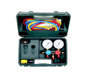
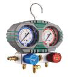
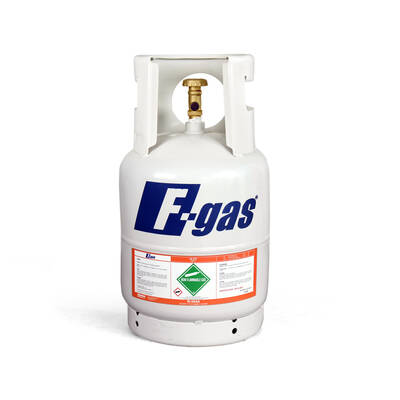
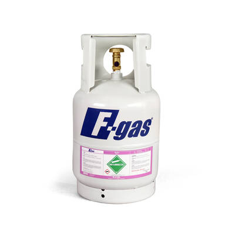
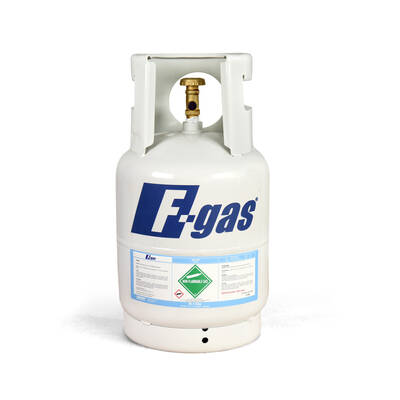
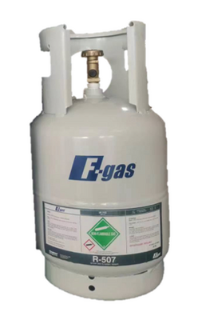
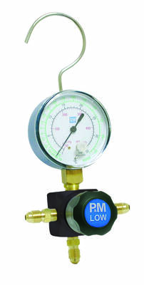
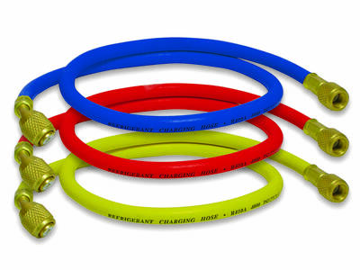


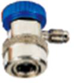
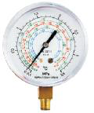
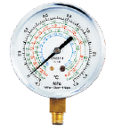
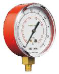
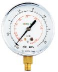
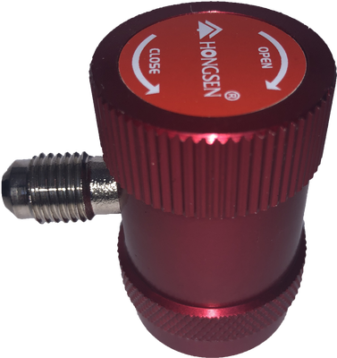
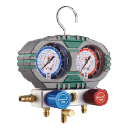
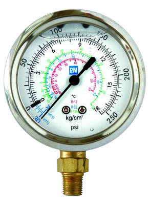
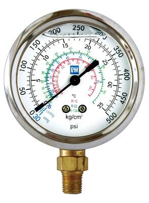
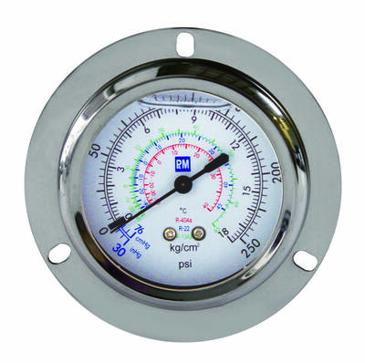
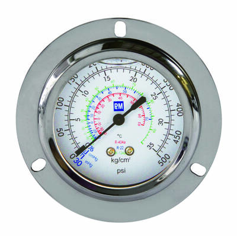
Tüm 100 ürünü filtreli listede gör →
Klimasun Soğutucu Akışkanlar (Gaz) kategorisinde Hongsen, Toshiba, Daikin, Lg, Opteon gibi markaların ürünlerini ve yedek parçalarını sunar.
Ürünlerin bir kısmı stoktan aynı gün sevk edilir; stokta olmayanlar Almanya ve İtalya'dan sipariş üzerine orijinal olarak tedarik edilir.
İlgilendiğiniz ürünleri teklif sepetine ekleyip WhatsApp (0532 424 6219) veya e-posta (info@klimasun.com.tr) ile gönderin; kurumsal teklifiniz hızla hazırlanır.
Evet, Klimasun'da tüm satışlar kurumsal e-faturalıdır.